💡 柏林獨旅行前懶人包 💡 Quick Info
章節導覽Table of Contents
🛑 柏林獨旅防雷與隱藏密技 🛑 Solo Travel Hacks & Hidden Tips
🏛️ 博物館島通票怎麼買最划算？Museum Pass Hacks
柏林有超過百間博物館！如果你只排了一天逛博物館島，買「博物館島通票 (Museum Island Pass)」(24€)，看兩間就回本。如果你打算在柏林待很多天且熱愛看展，強烈建議直接買「柏林博物館通票 (Berlin Museum Pass)」(32€)，三天內可暢遊柏林幾乎所有主要博物館。 Berlin has over 100 museums! If you only have one day for Museum Island, get the "Museum Island Pass" (24€). If you stay longer and love exhibitions, highly recommend the "Berlin Museum Pass" (32€), allowing 3-day access to almost all major museums in Berlin.
📱 BVG App 絕對是你的神隊友BVG App is Your Best Friend
柏林的售票機有時候會大排長龍，且部分舊機器只收硬幣或特定卡片。強烈建議抵達前先下載好 BVG Fahrinfo App。不僅查路線超精準，買票後直接存在手機裡，遇到查票員只要秀出 QR Code 即可，省去打票與弄丟實體票的麻煩！ Ticket machines in Berlin can have long queues, and some old ones only take coins. Highly recommend downloading the BVG Fahrinfo app before arrival. It checks routes accurately, and you can buy tickets directly. Just show the QR code to inspectors—no stamping or losing paper tickets!
🗺️ 必做體驗：柏林 11 大經典景點 🗺️ Must-Do: 11 Classic Spots in Berlin
柏林是一座承載著沉重二戰與冷戰歷史，同時又散發著極致前衛藝術氣息的城市。以下為你整理來到柏林絕不能錯過的地標： Berlin carries heavy WWII and Cold War history, while exuding an ultra-avant-garde art vibe. Here are the landmarks you absolutely cannot miss:
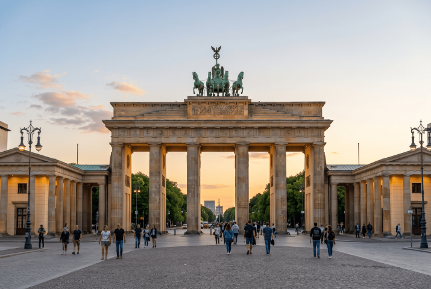
地標 / 免費Landmark / Free1. 布蘭登堡門 (Brandenburger Tor)1. Brandenburg Gate
柏林甚至全德國最具代表性的地標。這座新古典主義風格的建築曾是冷戰時期分裂的象徵，如今則代表著德國的統一與和平。 The most representative landmark of Berlin and Germany. This neoclassical gate was a symbol of division during the Cold War and now represents German unity and peace.
💭 我的感受：💭 Bryan's take: 走在下面才覺得真的很壯觀！ Walking underneath it, you really feel its magnificence!
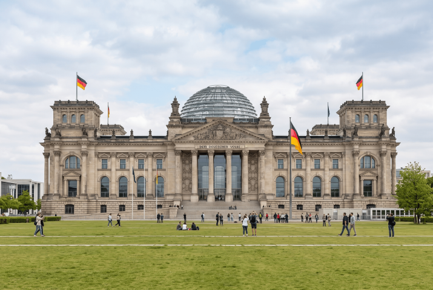
博物館 / 免費Museum / Free2. 德國國會大廈 (Reichstagsgebäude)2. Reichstag Building
結合歷史建築與現代玻璃穹頂的絕美設計。遊客可以免費預約進入頂部透明穹頂，360度俯瞰柏林市區，同時象徵著民主的透明化。 A stunning design combining historic architecture with a modern glass dome. Visitors can book free entry to the dome for 360-degree views of Berlin, symbolizing political transparency.
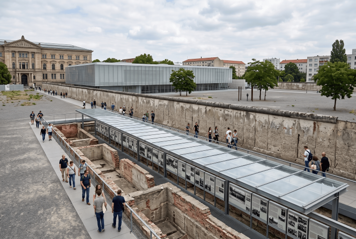
二戰歷史 / 免費WWII / Free3. 恐怖地形圖 (Topographie des Terrors)3. Topography of Terror
位於前納粹蓋世太保與黨衛軍總部遺址。這座免費的室內外展覽館毫不避諱地展示了納粹時期的恐怖統治與暴行，是極具教育意義的歷史反思之地。 Located on the site of the former Gestapo and SS headquarters. This free indoor/outdoor exhibition unflinchingly details the terror of the Nazi regime, offering profound historical reflection.
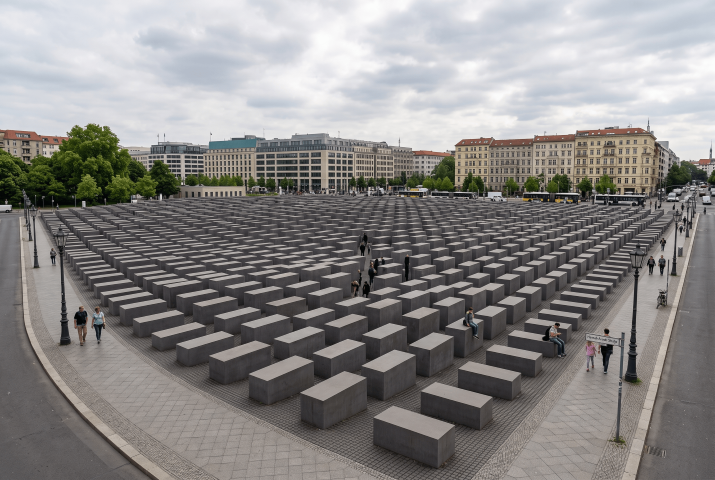
紀念地 / 免費Memorial / Free4. 歐洲被害猶太人紀念碑 Denkmal für die ermordeten Juden Europas4. Holocaust Memorial
由 2711 塊高低起伏的混凝土石碑組成的巨大迷宮。走入其中，逐漸高聳的石碑會帶來一種迷失與壓迫感，深刻傳達出對歷史悲劇的哀悼。地下設有免費資訊中心。 A massive maze of 2,711 undulating concrete slabs. Walking through it, the rising stones create a sense of disorientation and oppression, conveying grief for the historical tragedy. Free underground info center.
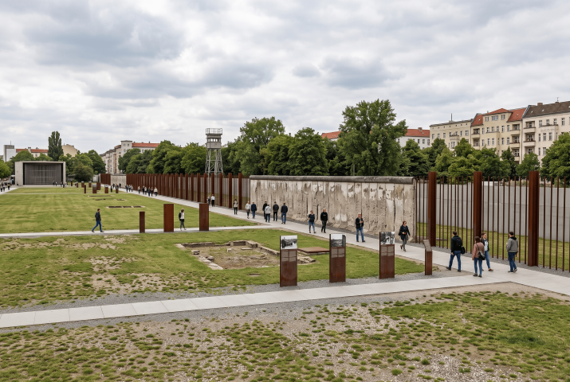
冷戰歷史 / 免費Cold War / Free5. 柏林圍牆紀念館 (Gedenkstätte Berliner Mauer)5. Berlin Wall Memorial
與東邊畫廊的藝術彩繪不同，這裡是感受冷戰肅殺氣氛的最佳地點。保留了原汁原味的「死亡地帶」與瞭望塔，露天展板述說著當年逃亡者的故事。 Unlike the painted East Side Gallery, this is the best place to feel the grim reality of the Cold War. It preserves an original "death strip" and watchtower, with outdoor panels telling escapees' stories.
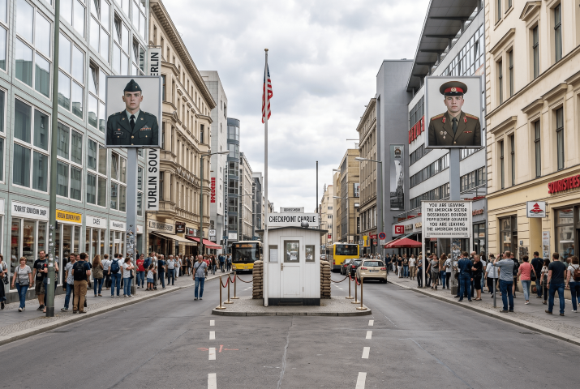
地標 / 免費Landmark / Free6. 查理檢查哨 (Checkpoint Charlie)6. Checkpoint Charlie
冷戰時期進出東西柏林最著名的盟軍檢查哨。著名的標語「你即將離開美國防區」就立於此地，周圍還有許多關於冷戰間諜與逃亡歷史的博物館。 The most famous Allied checkpoint between East and West Berlin during the Cold War. The famous sign "You are leaving the American sector" stands here, surrounded by museums about spies and escapes.
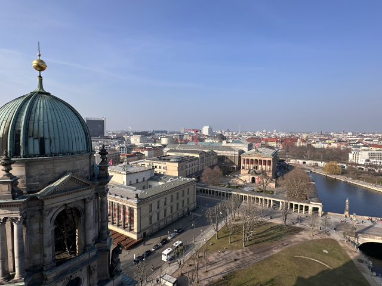
博物館Museums7. 博物館島 (Museumsinsel)7. Museum Island
被聯合國教科文組織列為世界遺產的藝術聖地，由施普雷河上五座世界級博物館組成，藏品涵蓋了從古埃及、古希臘羅馬到19世紀的藝術珍品。 A UNESCO World Heritage art mecca, consisting of five world-class museums on the Spree River. Collections span from ancient Egypt and Greco-Roman times to 19th-century art.
💭 我的感受：💭 Bryan's take: 必去佩加蒙博物館和新博物館的納芙蒂蒂胸像（不過納芙蒂蒂胸像不能拍照qq)。若喜歡博物館的朋友推薦直接買柏林博物館通票！ Must visit the Pergamon Museum and the Nefertiti Bust in the Neues Museum (no photos allowed for Nefertiti qq). If you love museums, highly recommend buying the Berlin Museum Pass!
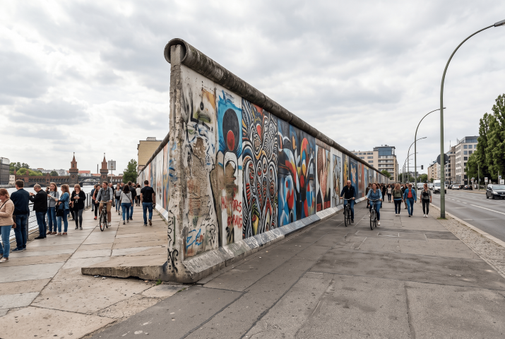
地標 / 免費Landmark / Free8. 東邊畫廊 (East Side Gallery)8. East Side Gallery
目前現存最長的一段柏林圍牆（1.3公里）。冷戰結束後，來自世界各地的藝術家在牆上留下了百餘幅塗鴉，其中最著名的便是《兄弟之吻》，是自由與反叛藝術的象徵。 The longest surviving section of the Berlin Wall (1.3 km). After the Cold War, artists worldwide painted over 100 murals here, the most famous being the "Fraternal Kiss". A symbol of freedom and rebellious art.
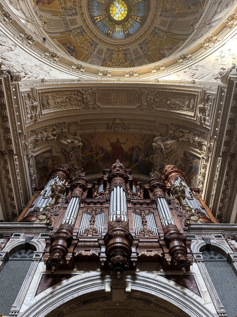
宗教建築Church9. 柏林大教堂 (Berliner Dom)9. Berlin Cathedral
坐落於博物館島上的華麗巴洛克式大教堂。擁有標誌性的薄荷綠穹頂，內部裝飾極其奢華，並安葬著許多普魯士王室成員。還可以登頂俯瞰市區。 A gorgeous Baroque cathedral on Museum Island. Features an iconic mint-green dome, incredibly luxurious interior, and the crypt of Prussian royals. You can climb to the top for city views.
💭 我的感受：💭 Bryan's take: 非常雄偉壯觀，若剛好遇上管風琴練習就真的賺到！ Very majestic and spectacular. If you happen to catch a pipe organ practice, you've really hit the jackpot!
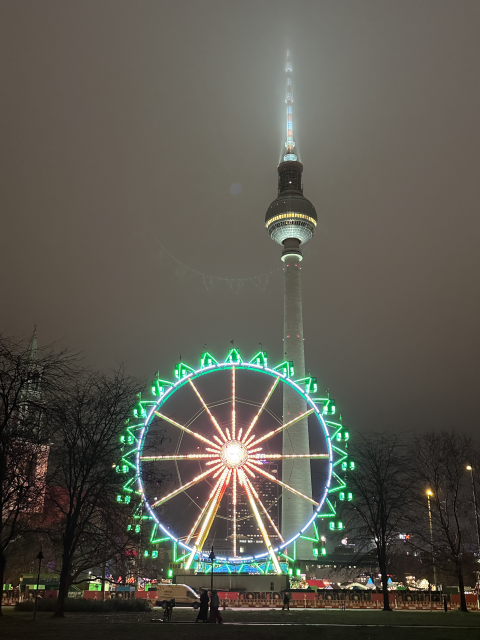
地標 / 登高Landmark / View10. 柏林電視塔 (Berliner Fernsehturm)10. Berlin TV Tower
高達 368 公尺，是德國最高的建築。由東德政府建於 1960 年代，球形觀景台提供 360 度無死角的柏林全景，上方還有一間旋轉餐廳。 At 368 meters, it's the tallest building in Germany. Built by East Germany in the 1960s. The spherical observation deck offers 360-degree views, with a revolving restaurant above it.
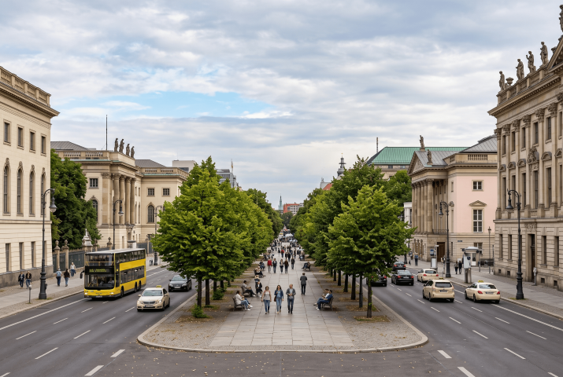
特色街道 / 免費Street / Free11. 菩提樹下大街 (Unter den Linden)11. Unter den Linden
柏林最著名的一條林蔭大道，從布蘭登堡門一直延伸至博物館島。兩側種滿菩提樹，沿途匯集了洪堡大學、國家歌劇院等歷史建築，是散步感受柏林氣息的完美路線。 Berlin's most famous boulevard, stretching from the Brandenburg Gate to Museum Island. Lined with linden trees, it features historic buildings like Humboldt University and the State Opera. A perfect route for a stroll.
🏔️️ 柏林近郊一日遊：普魯士榮光與沉重歷史 🏔️ Day Tours: Prussian Glory & Heavy History
柏林周邊有著風格迥異的城鎮，可以搭火車自行前往，或報名省心的一日團： Towns around Berlin offer starkly different vibes. Go by train or join a hassle-free day tour:
📍 自行前往推薦 (DB 德鐵 / 公車)DIY Travel (DB Trains / Bus)
波茨坦 無憂宮 (Schloss Sanssouci)Sanssouci Palace, Potsdam
⏱️ 約 1 小時~1 hr普魯士國王腓特烈大帝的夏宮，被譽為「德國的凡爾賽宮」，也是世界文化遺產，其壯麗的階梯式葡萄園設計極具特色。 Summer palace of Frederick the Great, dubbed the "Versailles of Germany" and a UNESCO site. The terraced vineyards are stunning.
薩克森豪森集中營 (Sachsenhausen)Sachsenhausen Camp
⏱️ 約 44 分鐘~44m距離柏林最近的集中營遺址（免費參觀）。曾是納粹集中營系統的指揮中心，能讓人深刻反思那段黑暗歷史。 The closest concentration camp memorial to Berlin (Free entry). Former HQ of the Nazi camp system. A place for deep reflection.
什未林城堡 (Schloss Schwerin)Schwerin Castle
⏱️ 約 2 小時 40 分~2h 40m建於湖心島上的世界遺產，被譽為「北方新天鵝堡」，浪漫絕美。 A UNESCO World Heritage castle built on an island, known as the "Neuschwanstein of the North".
德勒斯登 (Dresden)Dresden
⏱️ 約 1 小時 40 分~1h 40m「易北河畔的佛羅倫斯」。推薦必去景點： 茨溫格宮、 聖母教堂、 歷代大師畫廊、 森柏歌劇院、 王子的行列、 布呂爾平台、 德勒斯登王宮、 宮廷教堂。 "Florence on the Elbe". Must-see spots: Zwinger, Frauenkirche, Old Masters Gallery, Semperoper, Procession of Princes, Brühl's Terrace, Dresden Castle, Katholische Hofkirche.
呂貝瑙 (Lübbenau)Lübbenau (Spreewald)
⏱️ 約 1 小時 8 分~1h 8m史普雷河畔的森林小鎮 (Spreewald)，可以搭乘傳統平底船遊覽寧靜的水道，品嚐當地有名的醃黃瓜，非常愜意的自然行程。 A forest town in the Spreewald. You can take traditional punting tours through peaceful waterways and taste the famous local pickles. A very relaxing nature trip.
🚐 懶人首選：柏林出發直達一日團 Lazy Way: Direct Day Tours from Berlin
不想花時間研究轉車或買錯車票？選擇集合出發的一日專車團，有專業導遊解說，是提升獨旅效率的聰明決策。 Don't want to figure out train transfers or tickets? Joining a direct guided day tour saves time and adds expert knowledge.
🎉 年度慶典：三大必訪狂歡時刻 🎉 Annual Festivals: 3 Must-Visit Carnivals
感受柏林的前衛、多元與狂熱 Feel Berlin's Avant-Garde & Diversity
這是柏林展現多元文化與包容性的超級盛會，為期數天的街頭派對充滿森巴舞、世界音樂、美食攤位與形形色色的遊行隊伍。整個克羅伊茨堡區會變成一個巨大的戶外嘉年華。 A massive street party celebrating diversity. The Kreuzberg district turns into an outdoor carnival with samba, world music, food stalls, and colorful parades.
活動期間，柏林的地標建築與歷史古蹟在入夜後會化身為大型的燈光藝術畫布，上演絢麗的光雕投影秀。非常適合喜歡夜間攝影、散步或沉思的獨旅者。 Berlin's landmarks turn into giant light art canvases at night. Spectacular projection mapping shows make it perfect for night photography and strolling solos.
作為世界三大影展之一，柏林影展期間整個城市都籠罩在電影狂熱中。你可以買票穿梭於各大影院，觀賞來自全球的獨立電影。排隊時很容易就能跟旁邊的人聊起電影。 One of the "Big Three" film festivals. The city is enveloped in cinema fever. You can buy tickets for indie films worldwide and easily chat with fellow cinephiles in line.
🚆 交通全攻略：機場快線、市區分區與票券解析 🚆 Transport Guide: Airport, City Zones & Tickets
📍 從柏林布蘭登堡機場 (BER) 出發From Berlin Brandenburg Airport (BER)
機場快線火車 (FEX)Airport Express Train (FEX)
VBB 營運Operated by VBB🛫 起點🛫 Start機場航廈地下車站 (Flughafen BER)Airport Underground Station (BER)
🏁 終點🏁 End柏林中央車站 (Berlin Hbf)Berlin Central Station (Hbf)
⏱️ 時間⏱️ Time約 23 分鐘~23 mins
⏳ 班距⏳ Freq.約 15 分鐘一班Every 15 mins
💶 價格💶 Price單程約 5€ (購買 ABC 區車票)Single ~5€ (ABC Zone ticket)
🚉 柏林主要轉乘樞紐Main Transit Hubs
🚇 柏林市區大眾運輸 (BVG)Berlin City Transit (BVG)
柏林的交通由 BVG 營運，涵蓋地鐵(U-Bahn)、公車、電車與近郊火車(S-Bahn)。票價以 A、B、C 三區劃分。
Zone A/B：絕大部分市區景點。
Zone C：波茨坦(無憂宮)、薩克森豪森集中營、柏林機場。
Operated by BVG: U-Bahn, Buses, Trams, S-Bahn. Fares are divided into Zones A, B, C.
Zone A/B: Most city sights.
Zone C: Potsdam, Sachsenhausen, Airport.
💳 景點通票推薦：柏林省錢神器 💳 City Passes: Save Money in Berlin
柏林通歡迎卡 (Berlin WelcomeCard)Berlin WelcomeCard
適合對象：Best for:
不想花時間做細部規劃，喜歡跑大景點且希望無腦搭車、享有彈性折扣的人。Those who want hassle-free transit and flexible discounts on major sights.
包含內容：Includes:
無限次搭乘大眾運輸，並享有眾多景點、博物館、餐廳約 25% - 50% 折扣。
Unlimited transit + 25-50% discounts on sights, museums, and dining.
博物館島通票 (Museum Island Pass)Museum Island Pass
適合對象：Best for:
只有一天時間，且目標明確只想逛博物館島的人（看兩間就回本）。Visitors with only 1 day dedicated to Museum Island (pays off in 2 visits).
包含內容：Includes:
一日內免費進入所有博物館島上的主要博物館（如佩加蒙、新博物館的納芙蒂蒂胸像等）。
Free entry to all main museums on Museum Island for 1 day.
柏林博物館通票 (Berlin Museum Pass)Berlin Museum Pass
適合對象：Best for:
喜歡博物館且時間充裕的你（看三個就回本了）。Museum lovers with plenty of time (pays off after 3 visits).
包含內容：Includes:
連續三天內，免費參觀柏林 30 多間重點博物館與美術館。
Free entry to over 30 major museums and galleries in Berlin for 3 consecutive days.
🛏️ 住宿建議：安全高性價比獨旅好巢 🛏️ Accommodation: Safe & Budget Solo Stays
| 🛏️ 青旅名稱🛏️️ Hostel Name | 🔗 預訂連結🔗 Booking | 💰 平均房價參考💰 Est. Price | 💡 站長推薦理由💡 Why Recommend |
|---|---|---|---|
| Generator Berlin Alexanderplatz 📍 Google Maps | EUR 30 - 60 / 晚night | 位於亞歷山大廣場旁，交通樞紐四通八達。知名大型連鎖品牌，風格現代，雖然偏商業化但基礎設施完善安全。 Next to Alexanderplatz, a massive transit hub. Modern chain brand, a bit commercial but safe and well-equipped. | |
| St Christopher's Inn Berlin Mitte 📍 Google Maps | EUR 25 - 55 / 晚night | Mitte 區的黃金位置，走到博物館島很近。一樓自帶熱鬧的酒吧，非常適合想交各國朋友的旅客。 Prime location in Mitte, walking distance to Museum Island. Has a lively bar downstairs, great for meeting travelers. | |
| The Circus Hostel 📍 Google Maps | EUR 35 - 70 / 晚night | 柏林評價極高的精品青旅！地下室甚至有自家的微型釀酒廠。雖然價格稍高，但舒適度與設計感滿分。 Highly rated boutique hostel! Even has its own microbrewery in the basement. Slightly pricier but top-notch comfort and design. | |
| Generator Berlin Mitte 📍 Google Maps | EUR 30 - 60 / 晚night | 相較於亞歷山大廣場館，這間位於歷史街區，工業風設計更具文藝感，周圍有很多獨立小店與藝廊。 Located in a historic district with an artsy industrial design. Surrounded by indie shops and galleries. | |
| Pfefferbett Hostel 📍 Google Maps | EUR 35 - 65 / 晚night | 由 19 世紀的釀酒廠改建，位於深受年輕人喜愛的 Prenzlauer Berg 區。挑高天花板與紅磚牆充滿柏林特有的工業歷史魅力。 Converted from a 19th-century brewery in the trendy Prenzlauer Berg. High ceilings and red brick walls ooze Berlin's industrial charm. |
🍝 在地美食指南：柏林的平民小吃與普魯士風味 🍝 Local Food: Berlin's Street Eats & Prussian Flavors
🍽️ 必吃美食清單Must-Eat Foods
柏林的美食極具街頭感與平民色彩，同時也保留了北德與普魯士的傳統。來這裡絕對不能錯過這幾樣經典： Berlin's food scene is deeply rooted in street culture and working-class history, while retaining Prussian traditions. Don't miss these classics:
柏林最具代表性的平民美食！將豬肉香腸煎熟切片，淋上濃郁的番茄咖哩醬，再撒上咖哩粉，搭配炸薯條簡直完美。 Berlin's most iconic street food! Sliced fried pork sausage drenched in a rich tomato curry sauce, dusted with curry powder, and served with fries.
雖源自土耳其，卻是在柏林被發揚光大的。將削下的烤肉片與大量生菜、特製優格醬塞入土耳其麵包中，省錢又飽足！ Though originating from Turkey, it was popularized in Berlin. Sliced roasted meat stuffed in flatbread with fresh salad and yogurt sauce. Cheap and filling!
不同於南德酥脆的烤豬腳，北德偏好水煮豬腳。經過長時間燉煮，肉質軟嫩入口即化，通常搭配酸菜與豌豆泥食用。 Unlike the crispy southern roasted knuckle, northern Germany prefers boiled pork knuckles. Slow-cooked until melt-in-your-mouth tender, served with sauerkraut and pea puree.
經典的普魯士傳統菜。絞肉丸放入加入酸豆 (Capers) 的濃郁白醬中熬煮，微酸與奶香交織，常搭配馬鈴薯享用。 Classic Prussian dish. Meatballs simmered in a rich white caper sauce. The mix of slight tartness and creaminess pairs perfectly with boiled potatoes.
類似厚肉餅的德式熟食，切厚片煎熱後夾在硬麵包中，抹上黃芥末，是趕路時最方便的肉食小吃。 A German meatloaf. Cut into thick slices, pan-fried, and served in a crusty bread roll with mustard. A quick, satisfying meat snack for travelers.
外皮烤得深棕發亮、帶有粗鹽顆粒，內部扎實且越嚼越香的經典結形麵包。也可以買切開抹上奶油（Butterbrezel）的版本。 Classic knot-shaped bread with a dark, shiny crust and coarse salt. Chewy and flavorful. You can also get it sliced with butter (Butterbrezel).
將磨碎的馬鈴薯混合洋蔥與雞蛋煎至金黃酥脆的傳統小吃，外酥內軟，傳統上會搭配甜甜的蘋果泥（Apfelmus）一起吃，甜鹹交織。 Traditional snack of grated potatoes, onions, and eggs pan-fried until golden crispy. Traditionally served with sweet applesauce (Apfelmus) for a sweet-savory mix.
無孔的圓形油炸甜甜圈，當地稱 Pfannkuchen。內部填滿覆盆子或李子果醬，外層撒上滿滿糖粉，甜蜜罪惡。 A round fried doughnut with no hole, locally called Pfannkuchen. Filled with raspberry or plum jam and dusted with powdered sugar. Sweet and sinful.
🎒 獨旅實戰：柏林友好餐廳與平價清單 Solo Guide: Berlin Solo-friendly Eats
柏林有著各式各樣的街頭小吃與歷史酒館，一個人吃飯也絕不尷尬： Berlin offers diverse street food and historic taverns where dining solo is completely normal:
| 🍴 餐廳名稱🍴 Restaurant Name | 💰 價格水平💰 Price Level | 📍 交通位置📍 Location | 💡 站長推薦理由💡 Why Recommend |
|---|---|---|---|
| Curry 61 📍 在地圖開啟Open in Maps |
極低價位Very Low 街頭咖哩香腸Street Currywurst |
哈克市場 (Hackescher Markt)Hackescher Markt |
柏林評價極高的咖哩香腸名店！香腸外酥內嫩，薯條炸得恰到好處，特製的咖哩番茄醬是一絕。買完直接站在店外桌子吃，是最道地的柏林體驗。 Highly rated Currywurst spot! Crispy skin, tender inside, perfect fries, and excellent curry ketchup. Eat standing at the tables outside for a true Berlin vibe. |
| Joseph-Roth-Diele 📍 在地圖開啟Open in Maps |
中低價位Low-Mid 文藝復古酒館Literary Vintage Tavern |
波茨坦大街附近Near Potsdamer Str. |
以奧地利作家命名的溫馨小館，牆上貼滿舊報紙與照片。主打德式家常菜，柯尼斯堡肉丸非常美味。獨自用餐也能感受柏林深厚的文化底蘊。 Named after an Austrian writer, walls covered in old newspaper clippings. Great for German home cooking like Königsberger Klopse. Cozy and deeply cultural for solos. |
| Stadtklause 📍 在地圖開啟Open in Maps |
中價位Mid-Range 傳統平價德菜Traditional German |
安哈特車站旁 (Anhalter Bahnhof)Near Anhalter Bahnhof |
充滿歷史痕跡的老字號酒館。想體驗道地的柏林水煮豬腳 (Eisbein) 來這裡準沒錯！店內氣氛熱絡，常有常客聚集，是避開觀光客的好選擇。 A historic, authentic tavern. The perfect place to try traditional boiled pork knuckles (Eisbein). Lively local atmosphere, great to escape the tourist traps. |
| Metzer Eck 📍 在地圖開啟Open in Maps |
中價位Mid-Range 百年老城區酒館Centuries-old Pub |
普倫茨勞貝格區 (Prenzlauer Berg)Prenzlauer Berg |
創立於 1913 年的家庭經營老酒館，歷經兩次世界大戰與柏林圍牆時期仍屹立不搖。菜色實在，是體驗老東柏林街坊溫情的絕佳去處。 Family-run since 1913, surviving WWII and the Berlin Wall. Hearty dishes and a fantastic place to experience the warmth of old East Berlin neighborhoods. |
| Volkskammer 📍 在地圖開啟Open in Maps |
中價位Mid-Range 東德情懷主題餐廳GDR Themed Restaurant |
柏林東站 (Ostbahnhof) 附近Near Ostbahnhof |
想要一秒穿越回冷戰時期的東德 (GDR) 嗎？這間餐廳的裝潢、歌單甚至菜單都完美復刻了東德風格，供應當年受東歐與蘇聯影響的特色餐點，非常有趣。 Want to time-travel to Cold War East Germany? The decor, music, and menu perfectly replicate the GDR era, serving unique Eastern Bloc-influenced dishes. Very fun experience. |
🇩🇪 德國獨旅生存避雷箱Germany Survival Box
交通：單程車票必打卡Transit: Validate Tickets
德國大眾運輸車站沒有閘門，採「榮譽制」，但查票員神出鬼沒且罰款極重。若是購買紙本單程票，上車前務必在月台邊的打票機「打上時間印記 (Entwerten)」，電子票則要在「APP裡按開通」。沒打卡視同逃票！ German stations have no turnstiles (honor system), but inspectors are stealthy and fines are heavy. If buying paper singles, you MUST stamp them (Entwerten) in the platform machines. Unstamped tickets = fare evasion!
建議下載 BVG App 購買電子票，付款後即生效，完全不用找機器打卡，也不怕弄丟。 Use the BVG App for e-tickets. They activate automatically after payment—no machines needed!
作息：小心週日全面停擺Routine: Sunday Closures
德國嚴格執行「週日公休法規 (Sonntagsruhe)」。在星期天，除了火車站與機場內的少數店鋪外，所有的超市（如 Aldi, Rewe）、藥妝店 (dm, Rossmann) 與百貨公司全部大門緊閉。 Germany strictly enforces "Sunday Rest (Sonntagsruhe)". Except for a few shops in major stations and airports, all supermarkets, drugstores, and malls are completely closed on Sundays.
獨旅者務必在「週六傍晚前」採買好週末所需的糧食與水。週日最適合排逛博物館（或享受空曠的街道）。 Stock up on food and water by Saturday evening! Sundays are best for visiting museums.
環保：寶特瓶押金制 (Pfand)Eco: Bottle Deposit (Pfand)
在德國買多數的瓶裝水或飲料，結帳時會多收 0.25€ 的「空瓶押金 (Pfand)」。喝完千萬不要順手丟進垃圾桶！ When buying bottled water/drinks, you are charged an extra 0.25€ "bottle deposit (Pfand)". Do NOT throw empty bottles in the trash! It adds up quickly.
將空瓶收集起來，帶回任何一間超市入口處的「退瓶機 (Pfandautomat)」回收，機器會吐出收據，拿去櫃檯可換現金或折抵消費。 Return empty bottles to the "Pfandautomat" machines at supermarket entrances. It prints a receipt you can use for cash or discount.